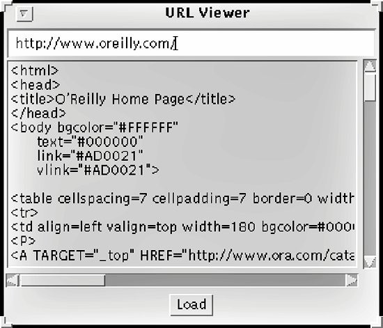

Chapter 2.6 OutputStream的图形界面(A Graphical User Interface for Output Streams)
我将会用javax.swing.JTextArea的一个可以与输出流连接的子类做为示例.当数据被写入到
流中,它会在文本域中以默认字符集来显示.(这并不是个好主意,因为文本域显示文本,而writer作
为它的数据源更合适.在之后的章节,用writer来扩展这个类.现在这只是做了个漂亮的例子)这个子
类会在示例2-4中显示.
实际的输出流类是JStreamedTextArea 的内部类.每个JStreamedTextArea控件在其成员变量
theOutput中保存了一个TextAreaOutputStream 类的对象.客户端程序员通过getOutputStream()方
法访问这个对象.JStreamedTextArea类有4个重载的构造函数,模仿了javax.swing.JTextArea类,每
个构造函数接受不同文本,行和列的组合.前三个构造函数只是通过this()将其参数和对应的默认值
传给了最常用的第四个构造函数.第四个构造函数调用了最常用的超累的构造函数,然后调用
setEditable(false)以确保用户不会在输出流向其输入内容的时候改变文本.
示例2-4 JStreamedTextArea控件
package com.elharo.io.ui;
import javax.swing.*;
import java.io.*;
public class JStreamedTextArea extends JTextArea {
private OutputStream theOutput = new TextAreaOutputStream( );
public JStreamedTextArea( ) {
this("", 0, 0);
}
public JStreamedTextArea(String text) {
this(text, 0, 0);
}
public JStreamedTextArea(int rows, int columns) {
this("", rows, columns);
}
public JStreamedTextArea(String text, int rows, int columns) {
super(text, rows, columns);
setEditable(false);
}
public OutputStream getOutputStream( ) {
return theOutput;
}
private class TextAreaOutputStream extends OutputStream {
private boolean closed = false;
public void write(int b) throws IOException {
checkOpen( );
// recall that the int should really just be a byte
b &= 0x000000FF;
// must convert byte to a char in order to append it
char c = (char) b;
append(String.valueOf(c));
}
private void checkOpen( ) throws IOException {
if (closed) throw new IOException("Write to closed stream");
}
public void write(byte[] data, int offset, int length)
throws IOException {
checkOpen( );
append(new String(data, offset, length));
}
public void close( ) {
this.closed = true;
}
}
}
内部类TextAreaOutputStream非常简单.它继承了OutputStream所以必须实现抽象方法write().
它也重写了以数组为参数的主要方法write()以提供更高效的实现.最后它重写了close()方法以确保
在流关闭后不会在有写入.
想使用这个类只需要再增加一个容器实例比如一个applet或一个window,就像添加一个普通的
文本域一样.然后调用它的getOutputStream()方法获得文本域输出流的引用,再用普通的write()方
法向文本域内写内容.一般来讲,这些步骤会在不同的时间不同的地方和不同的方法中发生.
图2-1中展示了一个使用JStreamedTextArea来显式从http://www.oreilly.com/下载的数据的
程序.图中的程序会在第五章中完成:
图2-1JStreamedTextArea控件

在之后的章节中我会依据现在还没讨论的技术重新审视并改进这个类.尤其是我将会更注意字
符集和编码的问题.